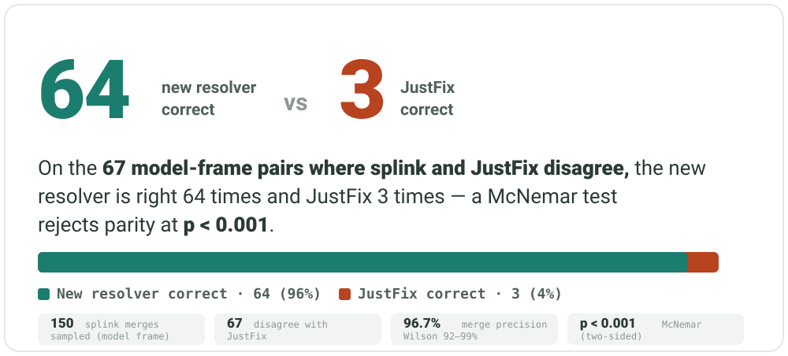

Public-records entity resolution
Precision-first probabilistic resolution of NYC landlord/owner identities from public HPD records — so a single owner's buildings stop scattering across separate “portfolios.”
Runs on the two HPD tables alone (hpd_contacts,
hpd_registrations). No knowledge graph, no geocoder.
Knowing which buildings belong to the same landlord is the foundation of nearly every data-driven housing investigation in New York — for journalists tracing a negligent operator across the boroughs, tenant organizers finding others stuck with the same landlord, and watchdog agencies targeting the worst actors. Group the buildings correctly and a pattern becomes visible across the whole portfolio; get it wrong and accountability slips through the cracks.
JustFix's Who Owns What is the gold standard for this task — but because it links landlords by shared names and addresses, it has two characteristic blind spots:
A business-address typo, a second office, or a per-building shell LLC defeats the match, and an owner's own buildings scatter across unrelated groups.
→ fixed here, by probabilistic record linkage
A registered-agent office, management company, or law firm's address is shared by many unrelated owners, and the address link lumps them together.
→ fixed by the follow-up, beneficial-ownership-resolution
Steven Croman surfaces as ~12 contact identities across 6 offices — one a
424 WEST 51 vs 4 WEST 51 typo away from another. Who Owns What
splits him into 6 separate portfolios; this engine resolves him to a single entity of
127 buildings, while never fusing two different people.
Interactive map
Toggle between the 6 portfolios Who Owns What splits him into and the single owner the resolver recovers.
Open the map →Validated against a 105-record hand-adjudicated gold set (pairwise precision ≈ 0.996, zero namesake fusions), and against Who Owns What directly on a blind, preregistered sample of the candidate frame:

False merges — distinct landlords fused because they share an office — are the subject of a follow-up project, beneficial-ownership-resolution (“Watchline”). Where this engine asks “are these the same name?”, that one asks “are these the same beneficial owner?” — pulling in ACRIS deeds, NYS DOS filings, and adjudicated review. On the same blind 512-pair frame it beat Who Owns What on 236 of the 259 pairs where the two disagree (McNemar p < 0.001). Together, the two projects cover both of Who Owns What's blind spots.